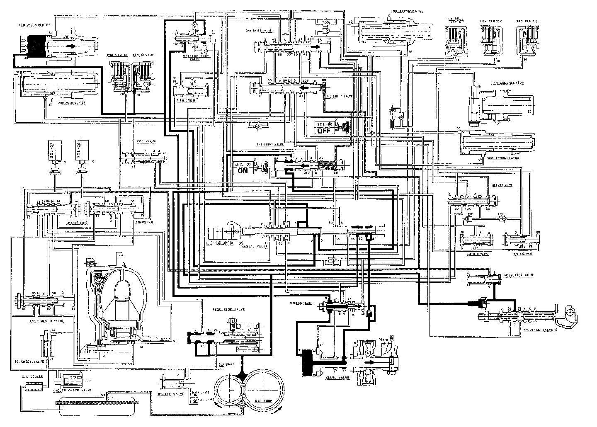

[R] Position

[R] Position
The flow of fluid through the torque converter circuit is the same as in N position. The fluid (1) from the oil pump flows through the manual valve and becomes line pressure (3). It then flows through the 1-2 shift valve to the servo valve via the servo control valve, causing the shift fork shaft to be moved in the reverse direction.
Under this condition, the shift control solenoid valve A is turned on whereas the valve B is turned off as in 3rd speed in [D4] or [D3] position. As a result, the 12 shift valve is also moved to the left. The fluid (3) will flow through the servo valve and manual valve to the 4th clutch; power is transmitted through the 4th clutch.
Reverse Inhibitor Control
When the R position is selected while the vehicle is moving forward at a speed over 6 mph (10 km/h), the TCM outputs 1st signal (A: OFF, B: ON), and the 1-2 shift valve is moved to the right side. The line pressure (3) is intercepted by the 1-2 shift valve; consequently, power is not transmitted as the 4th clutch and servo valve are not operated.
NOTE:
- When used, "left" or "right" indicates direction on the flowchart.
- SOL - (A): Shift Control Solenoid Valve A
- SOL - (B): Shift Control Solenoid Valve B
- SOL - (C): Lock-up Control Solenoid Valve A
- SOL - (D): Lock-up Control Solenoid Valve B